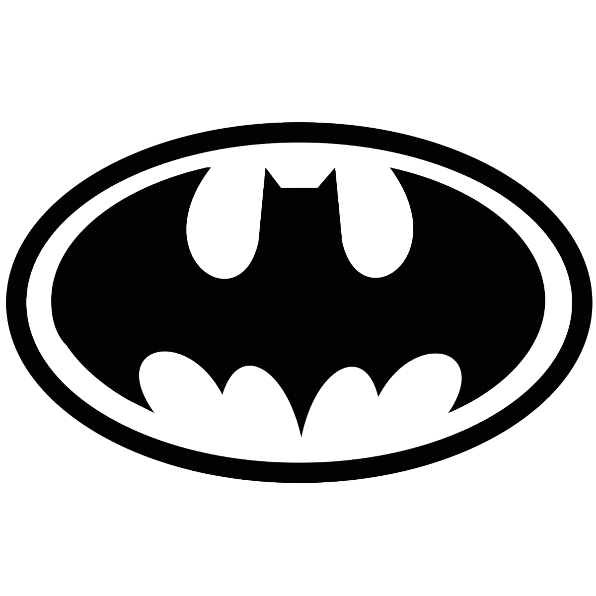
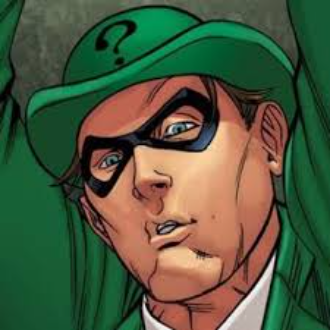
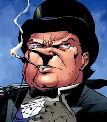
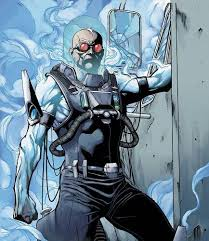
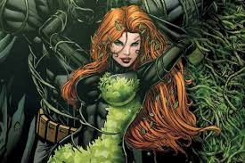
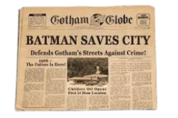
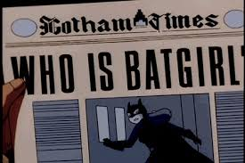

STATUS: OPERACIONAL
O sistema Bat-Tracker monitora em tempo real a atividade do Batman e de vilões em Gotham City. Funciona através de:
- Câmeras ocultas em pontos estratégicos
- Drones da WayneTech
- Relatos da polícia de Gotham
NÍVEL 5 indica que múltiplas ameaças de alto risco estão ativas (Charada, Pinguim e Senhor Frio). Batman está priorizando o Senhor Frio devido ao seu equipamento de congelamento massivo.
Batman em patrulha ativa em Gotham City
NÍVEL 5
Atividade de vilões moderada
VILÕES ATIVOS
Monitoramento e análise de ameaças

Nome real: Edward Nigma
Última localização: Distrito Financeiro
Mestre dos enigmas e quebra-cabeças. Deixa pistas complexas como marca registrada. Especialista em armadilhas intelectuais e tecnologia de manipulação.
- Bengala com gadgets ocultos
- Hacker experiente
- Obsessão por provar superioridade intelectual

Nome real: Oswald Cobblepot
Última localização: Iceberg Lounge
Chefe do crime organizado em Gotham. Opera sob fachada de empresário respeitável. Conhecido por sua coleção de guarda-chuvas armados.
- Guarda-chuvas com armas ocultas
- Ligações com a alta sociedade
- Especialista em lavagem de dinheiro

Nome real: Victor Fries
Última localização: Asilo Arkham
Cientista obcecado por criogenia. Utiliza tecnologia de congelamento avançada. Motivado por tentar salvar sua esposa doente.
- Pistola de congelamento
- Traje criogênico
- Conhecimento avançado em física
CIDADE DE GOTHAM NOTÍCIAS

"Hera faz qualquer vítima cair em um obsessivo e ardente amor por ela! Cuidado."

"Nosso protetor desativou uma bomba que iria destruir toda a cidade. "

"Batman tem uma nova parceira justiceira? Venha conferir!"